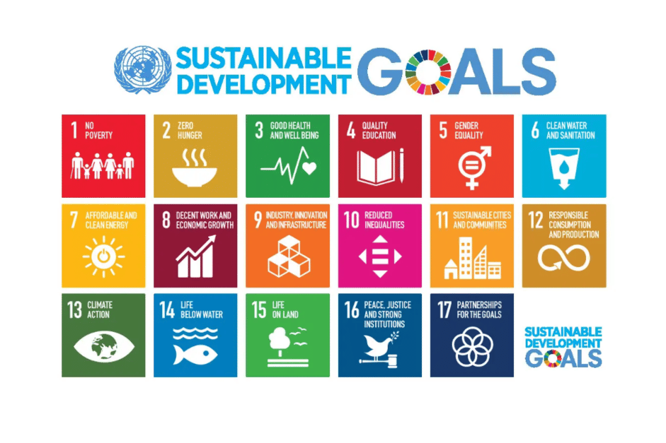

No Poverty
Mengakhiri kemiskinan dalam segala bentuk di seluruh dunia.

SDGs (Sustainable Development Goals) atau Tujuan Pembangunan Berkelanjutan adalah 17 tujuan global yang disepakati oleh negara - negara anggota Perserikatan Bangsa - Bangsa (PBB) pada tahun 2015 sebagai agenda pembangunan hingga tahun 2030. Agenda ini bertujuan mengakhiri kemiskinan, melindungi bumi, dan mewujudkan kesejahteraan yang merata serta berkelanjutan.
Ke - 17 tujuan tersebut mencakup berbagai bidang, seperti pendidikan, kesehatan, kesetaraan, energi bersih, perlindungan lingkungan, serta pertumbuhan ekonomi. Dalam mencapai tujuan - tujuan ini, diperlukan kerja sama dari berbagai pihak, termasuk pemerintah, masyarakat, sektor swasta, dan negara - negara di seluruh dunia. Melalui tindakan nyata dan kolaborasi, SDGs diharapkan dapat menciptakan kehidupan yang lebih baik bagi generasi sekarang maupun mendatang.

Mengakhiri kemiskinan dalam segala bentuk di seluruh dunia.
Mengakhiri kelaparan serta meningkatkan ketahanan pangan dan gizi.
Menjamin kehidupan yang sehat dan meningkatkan kesejahteraan bagi semua.
Menjamin pendidikan yang inklusif, merata, dan berkualitas bagi semua.
Mencapai kesetaraan gender serta memberdayakan perempuan dan anak perempuan.
Menjamin ketersediaan air bersih dan sanitasi yang layak bagi semua.
Menjamin akses terhadap energi yang terjangkau, andal, dan berkelanjutan.
Mendorong pertumbuhan ekonomi yang inklusif serta pekerjaan yang layak.
Membangun infrastruktur tangguh serta mendorong inovasi berkelanjutan.
Mengurangi kesenjangan di dalam dan antarnegara.
Mewujudkan kota dan permukiman yang inklusif, aman, tangguh, dan berkelanjutan.
Mendorong pola konsumsi dan produksi yang berkelanjutan.
Mengambil tindakan segera untuk mengatasi perubahan iklim dan dampaknya.
Melestarikan dan memanfaatkan sumber daya laut secara berkelanjutan.
Melindungi ekosistem daratan dan menjaga keanekaragaman hayati.
Mendorong masyarakat damai, akses keadilan, dan lembaga efektif.
Memperkuat kerja sama global untuk mencapai pembangunan berkelanjutan.